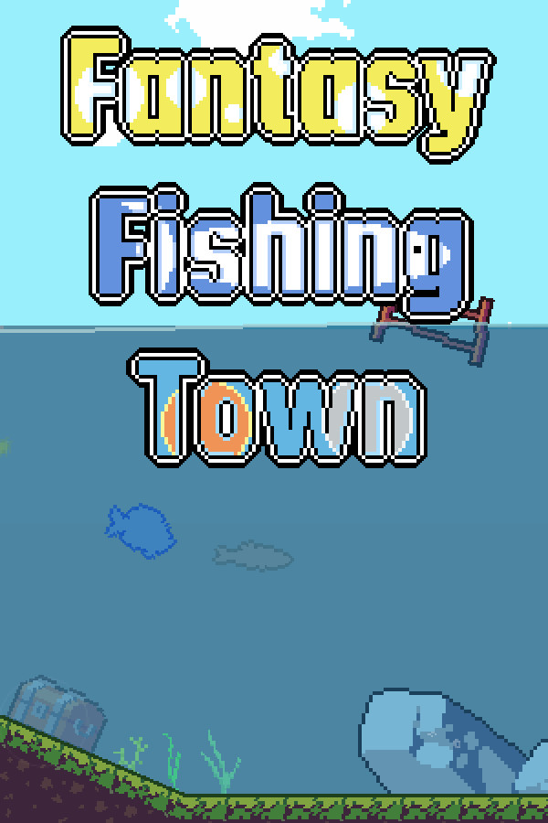

Fantasy Fishing Town
Fantasy Fishing Town
Details
|  | |
| Playtime | 7h 5m 0s |
| Last Activity | 5/09/2024 19:04:49 |
| Added | 5/06/2025 3:25:11 |
| Modified | 7/06/2025 19:53:26 |
| Completion Status | Finished |
| Library | Steam |
| Source | Steam |
| Platform | PC (Windows) |
| Release Date | |
| Community Score | |
| Critic Score | |
| User Score | |
| Genre | Adventure Casual Indie Simulation |
| Developer | |
| Publisher | |
| Feature | Achievements Cloud Saves Family Sharing Partial Controller Support Single-Player Trading Cards |
| Links | Community Hub Discussions Guides News Store Page PCGamingWiki Achievements |
| Tag | 2D 2D Platformer Action-Adventure Adventure Arcade Casual Cats Comedy Cute Fantasy Fishing Funny Immersive Sim Life Sim Pixel Graphics Platformer Relaxing Simulation Time Management Underwater |
Description

Welcome to Fantasy Fishing Town!
Embark on a journey to catch various fish and complete quests to find the legendary fish.
Enjoy the unique pleasure of pixel graphics and side-scrolling fishing!
The legendary fish - it's mine!
Features

- Real-time fishing system
Don't let your guard down when a fish bites a bait! Quickly pull the fishing rod and catch the fish.

- Various fishing tools
Use various combinations of fishing rod, fishing bobber, fishing hook, and bait.
- Various quests and fish delivery
You can get more rewards.
- Various fishing grounds and 25 kinds of fish
You can meet various fish from region to region.
- Fair reward system
You completed the same quest and caught a fish of high value? Of course, you need to get more rewards!